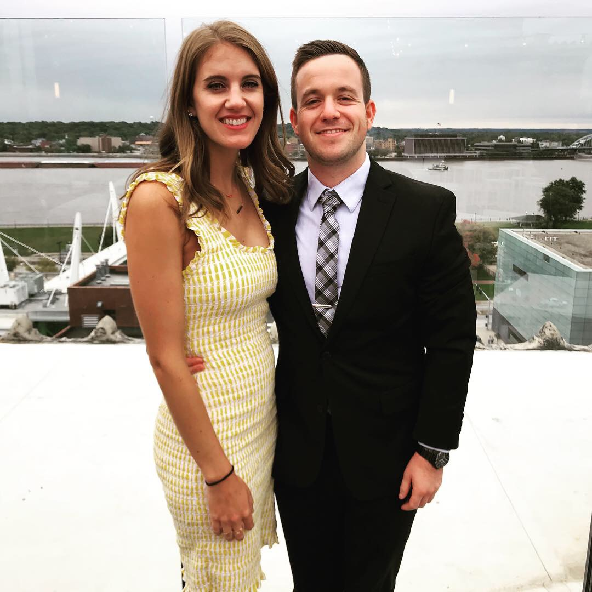
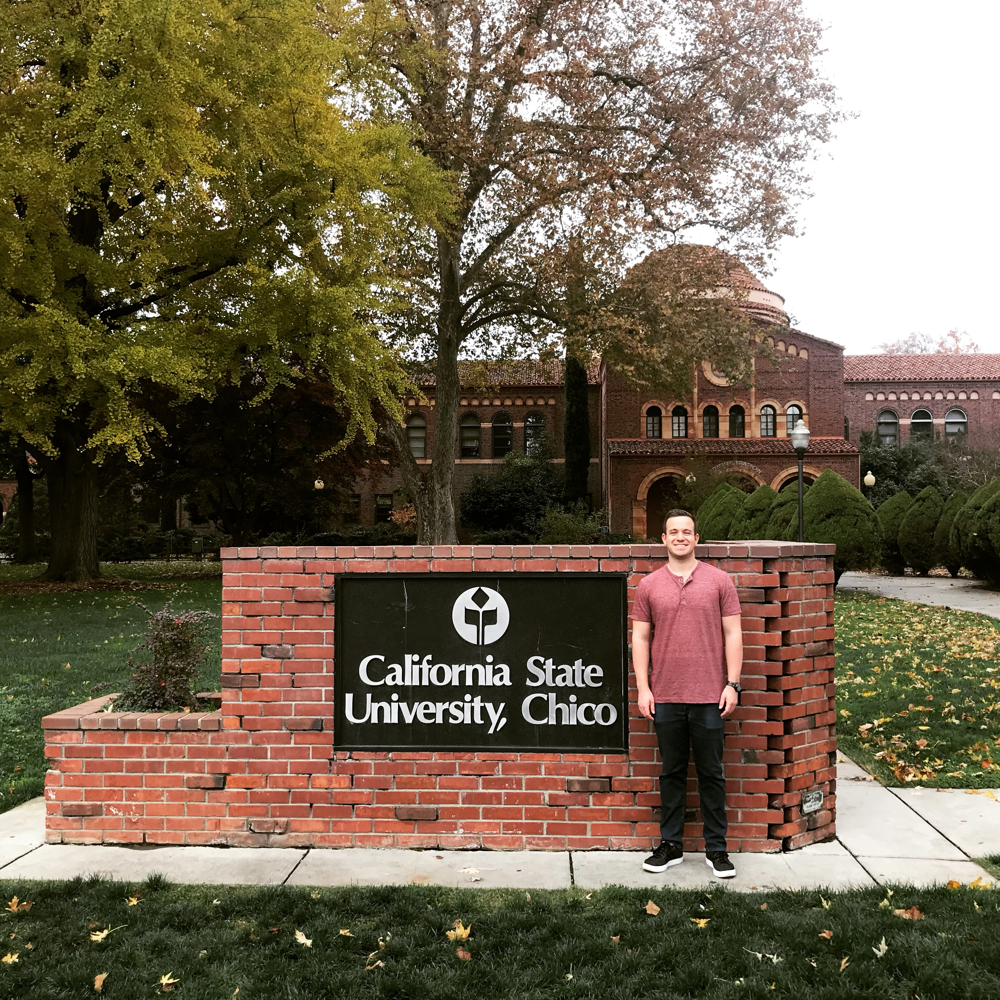
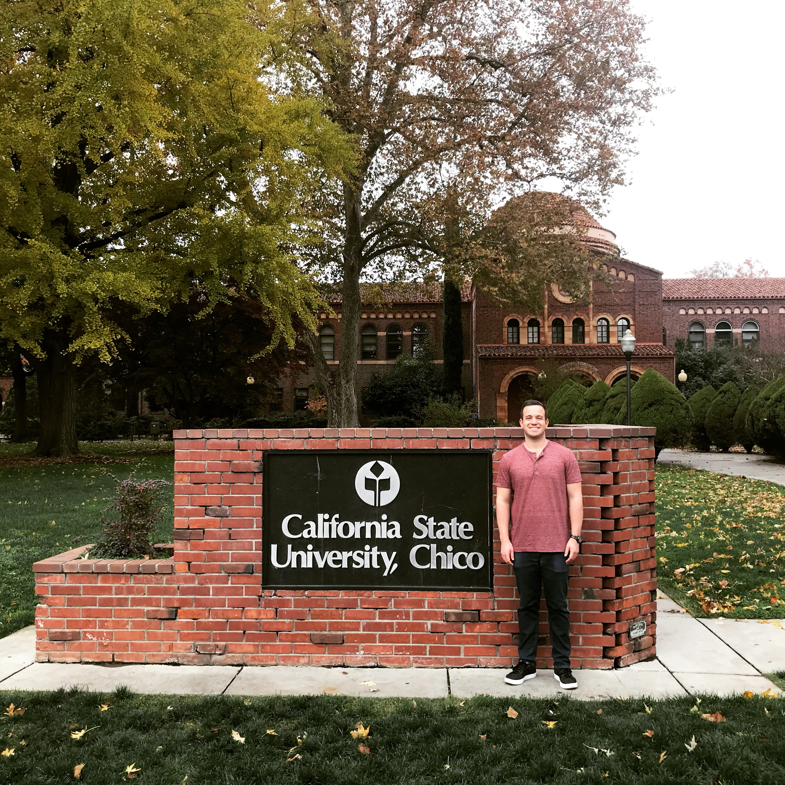

About Me
Hello, my name is Alex. I'm a Sales Professional and Fullstack Developer living in Chicago, IL. I'm originally from Southern California and am a graduate of California State University, Chico with a degree in Business Marketing.
 

Professional Background:
I am currently working as a Relationship Manager at G2. Before G2, I worked at LinkedIn and Glassdoor. You can see my work history on LinkedIn. Outside of work I enjoy being active, spending time with my friends and girlfriend and working on side proejct which you can see on my Portfolio. I'm looking to combine my previous experience with my experience in Developing to bring value to any organization.
Expertise:
FRONT END DEVELOPMENT
Front End Development is creating the visual front-end elements of a software, application or website. I create features that are directly viewable and accessible by the end user.
BACK END DEVELOPMENT
My knowledge of JavaScript, JQuery, Node.JS, and Express helps me create back-end logic of a website or software. I create components and features that help websites function and that are not directly seen by the user.
EXPERIENCE
I've worked at two rapid growth start-ups, Glassdoor and G2. Adding my experience at LinkedIn shows that I can bring value to any size company.